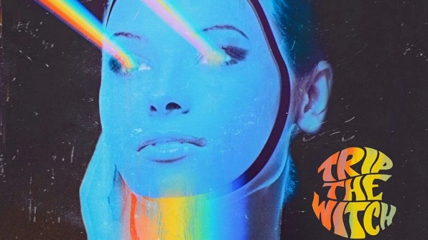
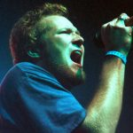

Corría el año 1992 y el grunge estaba en sus niveles más altos de popularidad, Nirvana
había
sacado Nevermind en el año anterior logrando romper records de ventas; también estaban
otras
bandas como Alice in Chains y SoundGarden llenando estadios y copando todas las radios
populares
de la época. Era el momento ideal para que nuestra banda preferida de el salto.
La grabación comenzó en el año '91, y la primer pista surgió luego de una improvisación
entre
Scott y De Leo.
La improvisación le gustó tanto al productor Brendan O'Brien al punto de pedirles que
hagan
un
album.
Las posteriores 5 semanas fueron de grabación y en ellas se terminó de gestar esta obra
maestra
del género, que a la
fecha vendió más de 40 millones de copias alrededor del mundo.
Dean DeLeo de Stone Temple Pilots lanzó nuevo proyecto
Trip The Witch

Dean DeLeo, guitarrista y compositor de Stone Temple Pilots, y el renombrado músico de
sesión de Nashville Tom Bukovac han unido sus fuerzas para un proyecto de colaboración,
Trip The Witch. Su álbum de debut, que ya está a la venta, es una colección de 10
canciones dinámicas, en su mayoría instrumentales, con una miríada de sonidos y estilos:
paisajes sonoros etéreos, acordes potentes y crujientes, melodías de guitarra vocales,
atmósferas caleidoscópicas y elementos de jazz, todo ello con una conectividad cósmica.
Al conocerse por correo electrónico a través de un amigo común, Dean y Tom eran grandes
fans del trabajo del otro. Empezaron a charlar por teléfono, congeniaron inmediatamente
y decidieron grabar un disco.
El álbum se escribió y se grabó íntegramente en línea durante la pandemia, y los dos se
enviaron vídeos de un lado a otro, construyendo ideas. «Yo le enviaba un riff y él me
enviaba otro», dice Tom. «Después de un tiempo, teníamos un millón de riffs y empezamos
a ensamblarlos en canciones». Dean añade: «Era tan emocionante tener una pista,
enviársela a la otra persona, y luego tener la anticipación y la emoción de recibirla de
vuelta y escuchar lo que el otro había hecho». Los dos aún no se han conocido en
persona.
LEER TAMBIËN

STP LANZÓ UN TRACK INEDITO
ADELANTANDO UNA REEDICIÓN
El grupo lanzara una versión de aniversario
de "Tiny Music...Songs from the Vatican
gift shop" en su 25° aniversario.
El tema astral que abre el álbum, «Saturn We Miss You», se destaca por la inimitable voz
del legendario líder de YES, Jon Anderson. Como dos fanáticos declarados de YES, le
enviaron a Jon por correo electrónico la pista instrumental con el título de la canción
y se quedaron más que extasiados cuando unos días después Jon respondió, escribiendo la
letra y grabando su voz en la pista.
¿Y qué viene ahora para TRIP THE WITCH? «Nos encantaría llevar esto a la carretera»,
dice Dean. Hemos hablado bastante de ello, y creo que sería increíblemente divertido».
Tom añade: «Queda mucho material de nuestras sesiones, así que podríamos hacer
fácilmente un segundo álbum.»
'Trip The Witch' listado de canciones:
Saturn we miss you
Dresed to kill myself
Wall of sound
Fell from the floor
Planet TD1
Surfside lounge
We lived here
Space wagon
The bird returns
Black light/relaim my time
Cancelan show de Bush y STP en El Paso
Por medio de sus redes sociales la banda Bush emitió un comunicado donde informa que
debido a circunstancias relacionadas con Covid-19, no podrán seguir adelante con las
fechas de su gira de otoño, donde se incluye el concierto en la ciudad de El Paso, junto
a Stone Temple Pilots. El evento se llevaría a cabo el viernes 1 de octubre a las
17:00hs en Speaking Rock. 'Deseamos extender nuestras más sinceras disculpas, ya
que esto es lo último que queremos para todos nuestros grandes fanáticos, así como para
nuestros buenos amigos en Stone Temple Pilots', menciona el comunidado. Esta es la
segunda ocasión que la gira conjunta se ve afectudada por la actual pandemia de
coronavirus, ya que fueron canceladas presentaciones en el pasado 2019.